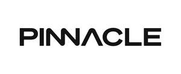

Trade Mark Journal No.2025/019 9 May 2025
UK00004189244 15 April 2025 (9,38,41,42)

- Class 9
- Downloadable computer software using Artificial Intelligence in the field of human performance coaching to assist users to develop mental skills to enhance their overall mental performance, including: building resilience, managing pressure, improving focus, motivation, confidence and energy-level; Downloadable computer application software to facilitate the provision of bespoke training plans provided by a human coach to help users achieve their goals and improve their mental performance; Downloadable applications that enable a human coach to provide bespoke coaching insights to a user to achieve their goals and improve their mental performance; Downloadable computer application software for mobile phones, namely, software for mental performance coaching and mental training; Downloadable applications for performance coaching via visual and auditory stimuli for enhanced perceptual, cognitive, and motor performance; Downloadable instant messaging software; downloadable mobile video conferencing applications to facilitate human coaching and mentoring services; downloadable communication software; data storage programs; Downloadable computer software for tracking and monitoring a user’s anxiety, stress, confidence, composure, focus, energy-level, wellness and overall personal mental performance goals; Downloadable computer software for recording, transmitting, reproducing or processing sound, images or data in relation to human performance coaching; Downloadable software to provide mental calming techniques, namely, for guiding the user through visualizations, breathing and mindfulness exercises; Downloadable Artificial Intelligence software to analyse data to provide users with personalised assessments to improve their overall mental performance and achieve their personal goals; Biometric software to track and analyse heart rate, sleep patterns, stress levels and physical activity; Downloadable software displaying visual progress indicators for users to track the completion of training goals; Downloadable machine learning software, namely, large language models to assist mental performance coaching by augmenting and supporting human coaches in allocating tasks, provide personalised tools for training, facilitate training delivery and feedback .
- Class 38
- Telecommunication and communication services; providing online and telecommunication facilities for real-time interaction using mobile and handheld computers, wired and wireless communication devices; videoconferencing and video calls; provision of access to online transcripts and transmission of messages; interactive communication services; communication via interactive voice response; all of the aforesaid in relation to the provision of human performance coaching.
- Class 41
- Professional coaching services in the field of human performance coaching to help individuals develop mental skills to enhance their overall mental performance, including: building resilience, managing pressure, improving focus, motivation, confidence and energy-level; Provision of online personalised human performance coaching sessions in relation to improving an individual’s mental performance; Providing online coaching sessions in the nature of evaluating an individual’s mental, physical, and technical skills using assessments in order to provide instruction, strategies and tools to help an individual improve their overall mental and physical performance and achieve their personal goals; Providing live and online personalised training in the fields of mental performance, applied neuroscience, psychology, organizational development, leadership development, personal and professional development, fitness, health and wellness, life and personal improvement; Providing analysis of information submitted by an individual to enable the performance coach to provide feedback, and insights to an individual to help achieve their personal goals; Conducting personalised training sessions on breathwork, meditation, visualisation, methodologies and routines; Preparation of progress reports by a professional coach to help an individual achieve their goals.
- Class 42
- Design and development of computer software in relation to human performance coaching to assist users to develop mental skills to enhance their overall mental performance, including: building resilience, managing pressure, improving focus, motivation, confidence and energy-level; Software as a service (SaaS) services in relation to human performance coaching; Non-downloadable computer software using Artificial Intelligence in the field of human performance coaching, namely, mental training, mental performance, applied neuroscience, mental resilience, psychology, organizational development, leadership development, personal and professional development and mindfulness meditation, fitness, health and wellness, life and personal improvement; Non-downloadable computer software, namely, software for human performance coaching and mental training; Providing biometric hardware and software technology to track and analyse heart rate, sleep patterns, stress levels and physical activity; Providing non-downloadable computer software to provide mental and physical performance assessments to help users to achieve their mental and physical goals; Providing online non-downloadable computer software and applications for monitoring, sensing, displaying, processing, transmitting information and data relating to human performance coaching; providing online non-downloadable computer software, namely software for managing, storing, analysing, maintaining, processing, structuring, reviewing, building, editing, distributing, communicating, organising, sharing, referencing, monitoring and integrating data in relation to human performance coaching; Application service provider (ASP) services featuring software for use in relation to human performance coaching; providing temporary use of non-downloadable software to enable users to access training content relating to their personalised training plan; Design and development of systems for data input, output, processing, display and storage; Providing online non-downloadable computer software to conduct personalised performance assessments to improve mental and physical performance; Providing online non-downloadable software for tracking and analysing mental and physical training performance and results; non-downloadable software for transmission of audio-visual content, video content and messages in relation to human performance coaching; consultancy and information services relating to all of the aforesaid.
PINNACLE INTELLIGENCE LIMITED
Representative: Orrick, Herrington & Sutcliffe (UK) LLP